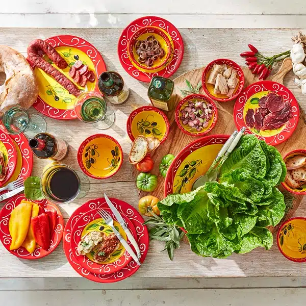

Cerveceria Catalana
Der erste Abend in Barcelona, und gleich die Feuertaufe: eine echte Tapas-Institution, bei der ihr euch in die Warteschlange einreiht wie alle anderen auch – Ruhm und Reservierungslosigkeit gehen hier Hand in Hand.

Besonderheiten
Seit Jahrzehnten eine der bekanntesten Tapas-Adressen der Stadt, entsprechend voll – und entsprechend gut. Klassische katalanische und spanische Küche in großer Auswahl, serviert von einem Personal, das den Ansturm mit beeindruckendem Tempo bewältigt. Kein Ort für ein ruhiges Gespräch, aber genau der richtige für den ersten Abend, an dem ihr einfach ankommen wollt.
Praktische Hinweise
Adresse: Carrer de Mallorca 236, 08008 Barcelona (Ecke Passeig de Gràcia, wenige Gehminuten vom Hotel). Preisklasse: ca. 20–40 € pro Person. Typische Gerichte: Kroketten, frittierte Tapas, Meeresfrüchte, Hummerreis, Bacalao mit Honig, Solomillo-Montadito mit Foie. Reservierung: nicht möglich – reines Walk-in-Prinzip, es gibt getrennte Wartelisten für drinnen und die Terrasse. Öffnungszeiten: täglich bis spät (Mo–Fr ab 8 Uhr, Sa/So ab 9 Uhr, bis ca. 1:30 Uhr nachts).